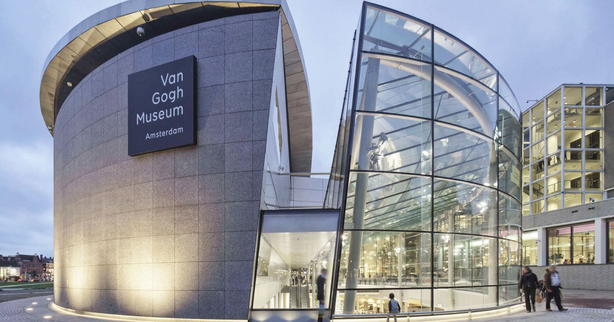
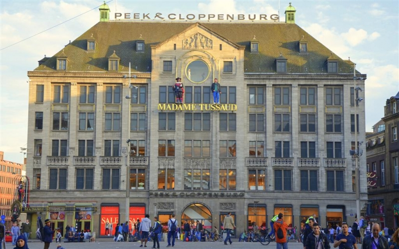
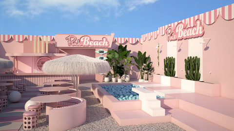
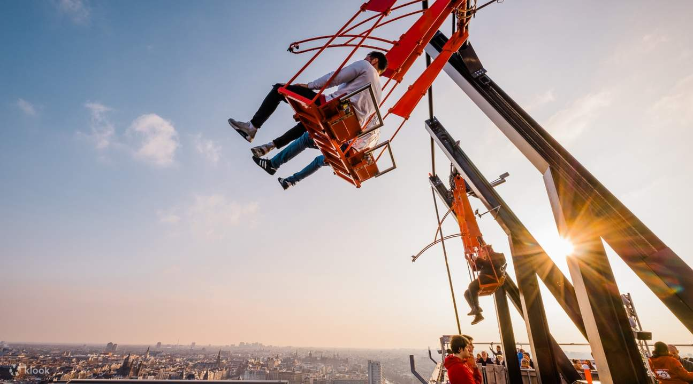

Van Gogh Museum
Con i suoi 200 dipinti e 550 fra disegni e acquerelli, rappresenta una delle più grandi collezioni mondiali dedicate al pittore olandese; Ospita anche oggetti personali e lettere scritte al fratello Theo, oltre alla collezione privata di Theo stesso.
Anne Frank Huis

La Casa di Anna Frank è molto più di un museo. L'alloggio segreto è conservato nel suo stato autentico e trasmette perfettamente l'atmosfera di quei giorni. La casa di Anna Frank, in olandese Anne Frank Huis, è un toccante museo che catapulta il visitatore nella disperazione degli anni della Seconda Guerra Mondiale.
Madame Tussaud Museum
Il museo di Madame Tussaud è una delle più famose attrazioni di Amsterdam e vanta una collezione in continua espansione di sculture di cera incredibilmente realistiche. Fatevi fotografare con i membri della famiglia reale, inclusa la regina Elisabetta, e famosissime celebrità come Audrey Hepburn e George Clooney.
Pink Beach
Passando al divertimento non si può non menzionare il Pink Beach.Sabbia rosa, palme, cactus e una vasca di palline (dove immergersi per gustare un drink dal gusto tropicale) sono le attrazioni principali di una spiaggia tutta da Instagrammare.DIVERTIMENTO ASSICURATO!
A'DAM Lookout
Per ultima ma non per importanza(Personalmente la mia preferita) presento l'A'DAM Lookout. Una straordinaria altalena sospesa a più di 100 metri di altezza da cui puoi dondolarti e vivere un'esperienza da brividi.